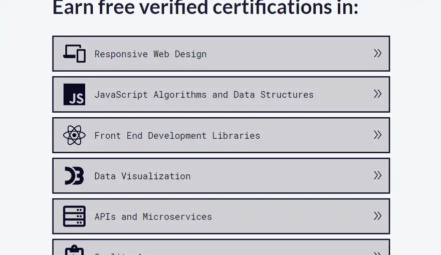
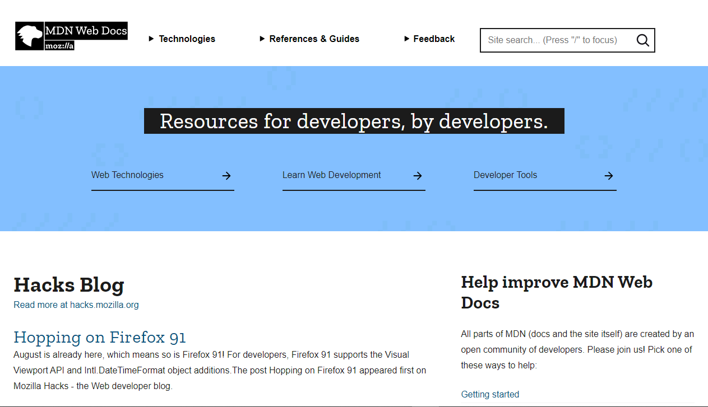
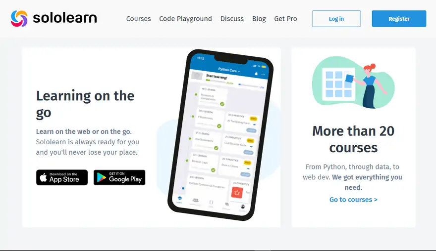

What is Programming?
If coding is the act of writing instructions for a computer to follow, what then is programming?
Many developers view programming as a more advanced term than coding, and a lot of others use both words interchangeably.
Programming still involves writing instructions for the computer to follow, but now data structures and algorithms are important. Some coding languages such as HTML, CSS, and Markdown don’t use algorithms and data structures, while others such as JavaScript, Python, Java, and C++ use them heavily.
This brings up a distinction that many developers make. In the web development industry, many developers don’t consider HTML to be a “programming language” in a strict sense, because it doesn’t perform any logic. It just determines the structure of a website.
On the other hand, languages like JavaScript, Python, C++, and Java, are all “official” programming languages because they handle complex functionalities and interactivity.
Some developers refer to anyone who codes in just HTML and CSS as a coder, and those who code in JavaScript, Java, C++, and other programming languages as programmers.
So you could say that all programmers are coders, but not all coders are programmers. But not everyone feels this way, so it’s important to do your own research and learn the skills before you take a side 🙂
Why Should You Learn How to Code?
The world is becoming a global village. And coding is a big reason it’s happening.
There are tons of reasons why you should learn how to code, and I will touch on some of them here.
- First of all, learning to code greatly enhances your analytical and problem-solving skills.
- Your earning potential increases: there are senior developers who make $400,000 a year. So by learning how to code, you can live out your dreams and become financially secure.
- You can work for the biggest tech companies: learning how to code open up doors for you to work at the biggest tech firms like Google, Amazon, Microsoft, and Facebook. If you’re a fan of FAANG, you should definitely consider learning to code.
- You can work independently: a lot of developers have years of experience in their respective industries and have never worked for any other person or company as an employee. By working for yourself, you work on your own schedule, at your own pace, and on your own terms.
How to Learn How to Code for Free
As I pointed out earlier, there are tons of resources online for learning how to code. You can find any resource you want by searching on Google, but that’s just the tip of the iceberg.
Learn to Code on YouTube
YouTube has often been described as a free “university”. A lot of people have become software engineers, web developers, data analysts, database engineers, and administrators by watching YouTube videos and putting what they learn into practice.
freeCodeCamp has a YouTube channel with over 1,000 videos on web development, data science, machine learning, freelancing, databases, and everything related to tech.
In addition to the freeCodeCamp channel, there are lots of other great channels such as Traversy Media, NetNinja, WebDevSimplified, Florin Pop, AmigosCode, and a lot more.
Learn to Code with freeCodeCamp

To narrow it down a little from Google searches and YouTube, freeCodeCamp is a great platform where you can learn how to code – it’s one of the best in the world, actually.
And one of the best parts? You don’t have to pay anything to learn to code because freeCodeCamp is a non-profit and all of its resources are completely free to use.
To get started with freeCodeCamp, you can log on to the curriculum website and sign up. Then you will get full access to the entire 3,000+ hour curriculum that can take you from zero to hero, novice to ninja, and beginner to expert in coding.
Apart from the curriculum, freeCodeCamp has a solid presence on YouTube in English and Spanish, as I mentioned above.
There is also a forum like StackOverflow where you can interact with fellow campers (that’s what freeCodeCamp users are called), ask questions, and get your coding issues resolved.
And of course there’s freeCodeCamp’s publication, where you are now, that contains over 7,000 tutorials on a wide range of tech topics.
Learn to Code with the MDN (Mozilla Developer Network)

MDN has one of the largest collections of documentation for web technologies and APIs such as HTML, CSS, JavaScript.
If you are the type that likes to learn by reading, MDN is a great place to learn coding and web development.
The beautiful thing about MDN is that the documentation is regularly updated and so you learn everything in a modern way.
Learn to Code with Sololearn

Sololearn is a social and interactive platform where you can learn any programming language and many of the popular frameworks and libraries. I used the platform myself while starting out, so I can testify to how helpful it is.
The curriculum is not really the most attractive thing about Sololearn – rather, it’s the community. Millions of people all around the world get to interact and brainstorm on coding, so you can ask questions openly and resolve your issues, post your projects, and get feedback.
In addition, you get the chance to compete with other people in quizzes and send them direct messages.
Sololearn is available in web and mobile versions. You can download the mobile app from the app store.
Conclusion
Coding is increasingly becoming an integral part of our world. Learning to code has changed a lot of lives as it can give you the skills to get a great job and earn your financial freedom. And there are tons of employment opportunities out there right now.
If you are willing to learn how to code, you don’t need to worry about the cost. There are tons of free resources online available for you to explore, as we’ve seen in this article.
So what are you waiting for? Learn how to code today & Enjoy Coding ❤